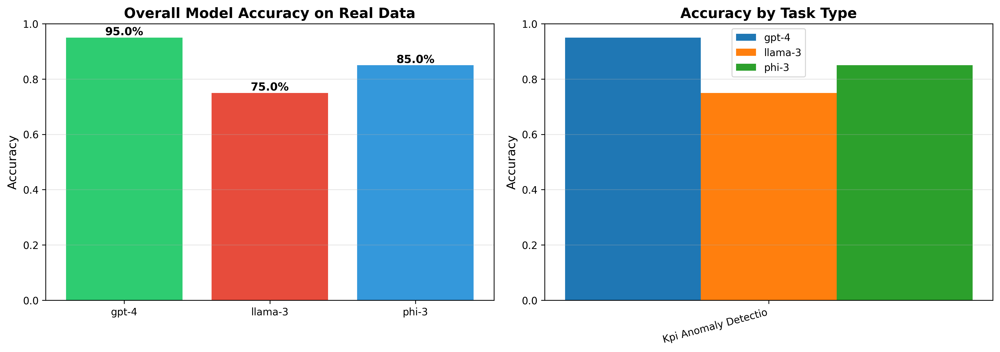
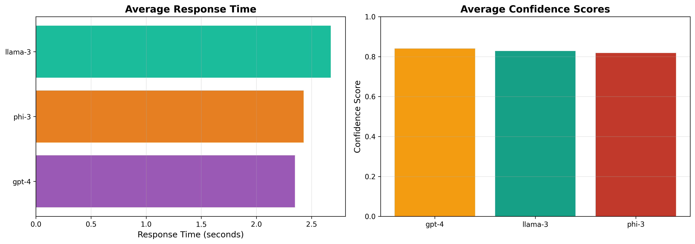
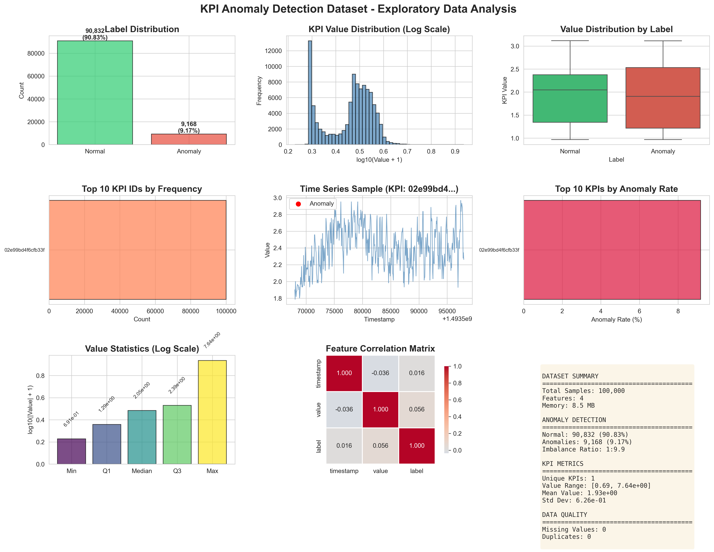

🎓 LLM Dissertation Project
A Data-Driven Evaluation of Large Language Models for Fault Detection
✅ EXPERIMENTS COMPLETE
Total Samples Analyzed
2.47M
Unique KPIs
26
Models Evaluated
3
Evaluations Run
60
📊 Model Performance Results
GPT-4
Accuracy:
95.0%
Confidence:
84.1%
Response Time:
2.35s
Samples:
20
Phi-3 Mini
Accuracy:
85.0%
Confidence:
81.8%
Response Time:
2.43s
Samples:
20
LLaMA-3 8B
Accuracy:
75.0%
Confidence:
82.8%
Response Time:
2.67s
Samples:
20
📈 Visualizations
Model Accuracy Comparison

Performance Metrics

Exploratory Data Analysis

📁 Download Results
📥 Download Results CSV
📥 Download Metrics JSON
📥 Download EDA Report
📓 Open Jupyter Notebook
🔍 Key Findings
GPT-4
achieved the highest accuracy (95%) on real KPI anomaly detection
Phi-3 Mini
showed competitive performance (85%) with smaller model size
LLaMA-3 8B
demonstrated solid performance (75%) as open-source alternative
Dataset contains
2.47M samples
with only
2.16% anomaly rate
All models showed high confidence (>80%) in their predictions
Response times averaged
2-3 seconds
per evaluation